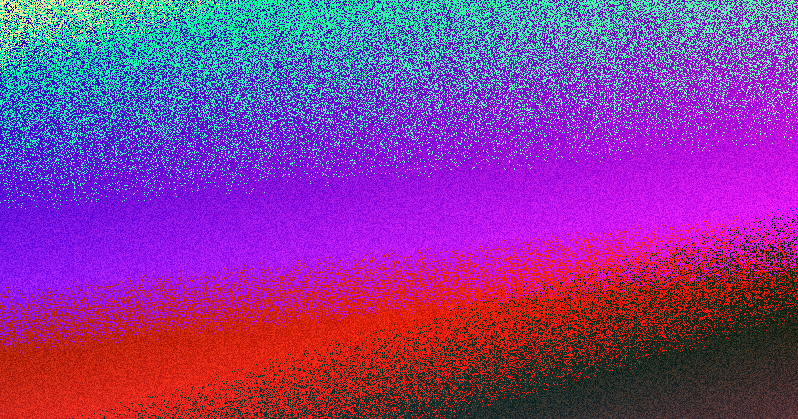

For most Sydney businesses, the useful starting point is not visual style but scope. A standard business website typically takes 4 to 12 weeks, and it recommends several written quotes that spell out content, images, hosting and maintenance. Before you brief anyone, compare what the site must change, which platform suits operations, who owns the finished asset and what approvals or redirects could slow the job.
For local buyers, web design sydney costs Start with the business problem, not the template.
Web Design Sydney Costs Explained
For Sydney business owners comparing web design options, the practical question is whether the site can explain the offer quickly, load cleanly on mobile and make the next enquiry step obvious. The source page says it separates local searchers, referral visitors and returning customers, which is a practical reminder that not every audience lands with the same level of trust or intent. A professional practice in North Sydney, a cafe in Surry Hills and an online retailer in Chatswood do not need the same proof, page order or call to action, even if all three want a sharper site. The page treats Sydney as several buying contexts rather than one generic market. A good Sydney website has to earn trust fast. We plan, write and build sites that explain what you do, load cleanly on mobile and make it simple for the right customer to enquire. Web Design Sydney offers eight service types, including custom builds, small business sites, WordPress, eCommerce, redesigns, landing pages, SEO-friendly builds and ongoing care. That still leaves room for search-readiness and care after launch, but those should support the operating model, not disguise a weak brief.
What Goes Into a Quote
The source page is unusually direct about what changes effort, page count, product data, integrations, copy readiness, redirects and care. That makes those items the right place to test a quote. If two proposals look similar on price but one is vague about content, images or redirects, the cheaper number may only be hiding work that appears later as variation cost or delay. Timing should be treated the same way. The page says a standard business website typically takes 4 to 12 weeks, including discovery, design, development, testing and content creation. That range is a reminder to ask what is ready now, what still needs approval and who is responsible for supplying copy, images and edits. Ask for written scope, not verbal assumptions. Check exactly what content and image work is included. Confirm whether redirects, hosting and maintenance sit inside the quote or outside it. Web Design Sydney emphasises straight pricing and a clear scope before you commit. No vague quote, no surprise invoice at the end.
Timing and Ownership
One of the strongest buyer checks on the page is ownership. It says the domain, content and finished site stay with the client, and that logins are handed over. If a proposal is fuzzy on admin access, editable content or who controls hosting after launch, fix that before approving design direction. The limits matter as much as the promises. The page explicitly says there are no first-page guarantees, no fake portfolio claims and no mystery ownership. It also says domains, hosting, admin access and handover should be discussed before build choices are locked. Combined with its fast, mobile-first, search-ready positioning, that is a sensible way to judge whether a provider is being clear about what the build can do, and what it cannot guarantee on its own. A Sydney website can be ambitious without pretending that design alone controls Google, sales or the speed of a buyer's decision. No ranking guarantees. The build gives clean foundations. Ongoing search growth still depends on content, authority, competition and time.
Platform Choice
The source page is clear that platform choice should follow operations and ownership. Its service mix covers custom builds, small business sites, WordPress, eCommerce, redesigns, landing pages, SEO-friendly builds and ongoing care, so the useful comparison is not which option sounds modern, but which one reduces friction for your team and your customers. Custom build is for a strategy-led job shaped around the business and the customers you want to reach. Small business site is when sensible budget control and conversion focus matter more than extra complexity. WordPress is when the team needs something easy to update without a developer on call. eCommerce is when Shopify or WooCommerce, product data and trust signals are central to the job. Redesign is when the existing site is ageing or underperforming but useful rankings need protection. Landing page is when a campaign, launch or promotion needs one focused action. That still leaves room for search-readiness and care after launch, but those should support the operating model, not disguise a weak brief. Domains, hosting, admin access and handover are discussed before build choices are locked. You own the lot. Your domain, your content and your finished site stay yours. We hand over the logins and can show you how to update it.
- Define the business problem. Write the one change the site must deliver, such as more qualified enquiries or a cleaner quote path.
- Map the visitor groups. Separate local searchers, referral visitors and returning customers so the page order matches how they decide.
- Choose the platform. Pick WordPress, Shopify, WooCommerce or a custom build based on operations and ownership, not trend.
- Request a written scope. Ask for a written quote that spells out content, images, hosting and maintenance before approving design direction.
| Service Type | Best For | Ownership |
|---|---|---|
| Custom Build | Strategy-led, bespoke | Client owns all |
| Small Business Site | Budget control, conversion | Client owns all |
| WordPress | Easy updates, flexible | Client owns all |
| eCommerce | Shopify/WooCommerce | Client owns all |
Common questions
How long does a Sydney website build take? A standard business website typically takes 4 to 12 weeks, including discovery, design, development, testing and content creation.
What should be included in a written quote? A written quote should spell out content, images, hosting and maintenance, as well as page count, integrations and redirects.
Who owns the domain and content? The domain, content and finished site stay with the client, and logins are handed over after launch.
This guide is an independent resource for Sydney business owners comparing web design options.